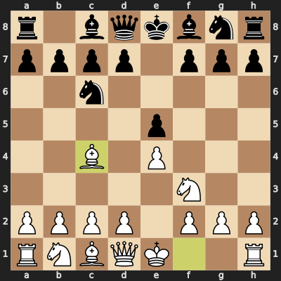
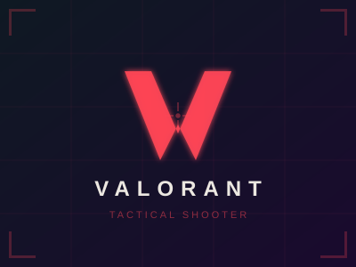

$ whoami
Ishaan Dwivedi
$ cat role.txt
|
$ echo $PASSION
Building scalable platforms, AI-driven automations & developer tooling ✨
$ _

Available for opportunities
$ whoami
$ cat role.txt
$ echo $PASSION
Building scalable platforms, AI-driven automations & developer tooling ✨
$ _
Hey there! 👋 I'm Ishaan Dwivedi, a Software Engineer II at Microsoft with 5+ years of experience building scalable platforms, automation frameworks, and developer tooling.
With deep expertise in cloud services, low-latency systems, and AI-driven automation, I thrive at turning complex problems into elegant solutions while keeping reliability high and downtime low.
Previously at JP Morgan Chase, I worked on ultra-low latency trading platforms and cross-connectivity systems. I'm passionate about Agentic AI, developer productivity, and sharing knowledge with the community. 🚀
{ "name": "Ishaan Dwivedi", "role": "Software Engineer II", "company": "Microsoft", "location": "Hyderabad, India 🇮🇳", "languages": [ "C#", "C++", "Python", "X++" ], "passions": [ "Agentic AI", "Cloud Services", "Developer Tooling" ] }
Tools & technologies I work with
Microsoft · Full-time
JP Morgan Chase & Co. · Full-time
Computer Science & Engineering
Maulana Azad National Institute of Technology (MANIT), Bhopal
2016 – 2020
Aditya Convent School, Jabalpur
2015 – 2016
St. Aloysius Sr. Sec. School, Jabalpur
2013 – 2014
Recognized for extraordinary technical & soft skills at GirlScript Tech Summit, Nagpur (2019). Also organized an Ideathon along with HCL Technologies at the Summit.
December 2017
National Rank 66 (Online First Round), First Prize (Offline Final Round) — Technocrats Institute of Technology, Bhopal (2018)
Unified Council (2015)
My full resume at a glance
Innovative Software Engineer with 5+ years of experience building scalable platforms, automation frameworks, and developer tooling. Proven track record in cloud services, low‑latency systems, AI‑driven automation, and cost optimization. Skilled at turning complex problems into elegant solutions while keeping reliability high and downtime low.
Microsoft · Hyderabad
JP Morgan Chase & Co. · Bengaluru
MANIT, Bhopal
Aditya Convent School, Jabalpur
St. Aloysius Sr. Sec. School, Jabalpur
Recognized for extraordinary technical & soft skills at GirlScript Tech Summit, Nagpur. Organized an Ideathon with HCL Technologies.
National Rank 66 (Online First Round), First Prize (Offline Final Round) — Technocrats Institute of Technology, Bhopal
What I do when I'm not writing code
I love strumming my ukulele and singing along. My go-to chord progression is C → Am → G → F — it's amazing how many hits fit this pattern!
Whether it's gully cricket on a Sunday morning or watching an intense IPL final, cricket has been a part of my life since childhood. There's nothing like the thrill of a last-ball finish!

I enjoy the strategic depth of chess. My favorite opening to play as White is the Italian Game (1.e4 e5 2.Nf3 Nc6 3.Bc4) — a classical opening that targets the f7 weakness early.

Italian Game — after 3.Bc4When I need to unwind, tactical FPS games are my go-to. I love the team coordination in Valorant and the raw aim duels in CS2.

Valorant CS2
CS2
Let's build something amazing together
I'm currently open to new opportunities — whether it's a full-time role, freelance project, or just a tech chat. My inbox is always open! 📬